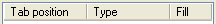

HeaderCtrl
class HeaderCtrl

Derived from Ctrl, CtrlFrame
HeaderCtrl is used mainly for table headers. It can be set up to a certain column structure (in the code terminology, the individual header columns are called tabs) including the tabs' visual characteristics (tab title names, icons etc.) and behavioral constraints (tab width limits, the ability to show / hide individual tabs).
The individual tab widths are defined by three basic properties: the logical tab width, its minimum and maximum pixel width. The minimum and maximum tab width are final pixel values defining constraints for physical (final) column widths. On the other hand, the logical tab widths are given in arbitrary units, which are multiplied by a certain scaling factor whenever the header control is laid out to fit the view size. Therefore normally their absolute magnitudes don't matter, just their ratios.
The header control can operate in four different visual modes. Each mode effectively defines how the logical relative tab widths are fitted to the current view size:
Proportional: the tab widths are proportionally adjusted with respect to preset width constraints to fill the current view width;
ReduceLast: every time a tab width is set and the total tab width exceeds the view size, the following tab widths (tabs to the right) are reduced in right-to-left order (beginning with the rightmost tab) to fit the view size.
ReduceNext: every time a tab width is set and the total tab width exceeds the view size, the following tab widths (tabs to the right) are reduced in left-to-right order (beginning with the tab just after the tab being adjusted) to fit the view size.
Absolute: the tab widths are never modified automatically, the logical header width can be smaller or greater than the actual view size. Whenever the total tab width exceeds the view size, the header can be scrolled to the left or right to pan its visible portion within the parent view.
From the programmer's point of view, the HeaderCtrl takes complete control over the distribution of tabs and the user interface needed to adjust them. The host control can use the header control (typically during Layout or Paint) to obtain horizontal pixel positions of the individual tab breaks and use them to position and paint the column data.
If Moving modifier is used, HeaderCtrl allows to reorder tabs using drag & drop operation. Client code can identify the order using GetTabIndex method, which returns the "original" index for the tab.
The HeaderCtrl implements the frame interface; when attached to a parent control using the AddFrame method, it positions itself automatically at the top of the control rectangle (above its view).
In addition to the standard tab title functionality, the rectangular areas corresponding to the individual tabs can act as pseudo-buttons invoking a certain functionality when clicked. Each header tab has a WhenAction callback; when set to a non-null value, the header control starts to check for mouse clicks and executes the callback whenever the corresponding tab is clicked. When used to invoke popups, you can use the GetTabRect method to determine the actual location of a certain header tab and align the dropdown control with respect to the tab rectangle location.
Rect GetTabRect(int i)
Returns the bounding box of a certain tab (in coordinates relative to the HeaderCtrl view). This can be used by controls using the header (like ArrayCtrl) to determine column break locations or by host applications for positioning dropdown controls (activated upon clicking a tab) relative to the tab box within the header.
|
i |
Tab index (zero based). |
|
Return value |
rectangular tab bounding box within the HeaderCtrl. |
Hint: to locate drop-down controls (e.g. popup menus) relative to the tab rectangle, you have to transform the returned rectangle to screen coordinates. This can be done for example using the following code snippet:
Rect tab2_scr_rect = tab.GetTabRect(2) + tab.GetScreenView().TopLeft();
Returns the descriptive HeaderCtrl::Column structure of a given header tab. This constant version can be used to retrieve individual tab properties. For a thorough description of the Column structure, see below.
|
i |
Tab index within the header (zero based). |
|
Return value |
a (constant) reference to the Column structure describing the tab. |
Returns a (non-constant) reference to the descriptive HeaderCtrl::Column structure of a given header tab. This can be used to set and retrieve individual tab properties (see below for a full description of the Column structure).
|
i |
Tab index (zero based). |
|
Return value |
a non-constant reference to the Column structure for the given tab. |
Column& Add(const char *text, double ratio = 0)
Adds a new tab after (to the right of) all existing header tabs. The function returns a (non-constant) reference to the HeaderCtrl::Column structure which can be further used to set up additional tab properties.
|
Return value |
a non-constant reference to the Column structure describing the newly added tab. |
Column& Add()
Adds a new tab after (to the right of) all existing header tabs. This is identical to the above version with the text argument set to an empty string and ratio set to 0.
|
Return value |
a non-constant reference to the Column structure describing the newly added tab. |
const Column& operator[](int i) const
Returns a (constant) reference to a given header tab. This is identical to the const version of the Tab method.
|
i |
Tab index (zero based). |
|
Return value |
a constant reference to the given header tab. |
int GetCount() const
Returns the current number of header tabs. Each Add increases this value by one and Reset sets it to 0 (the initial value).
|
Return value |
Number of tabs. |
void Reset()
Resets the header tab to its initial state (removes all tabs).
void ShowTab(int i, bool show = true)
Shows or hides a certain header tab.
|
show |
flag indicating whether the tab should be shown (true) or hidden (false). |
void HideTab(int i)
Hides a certain header tab. This is identical to ShowTab(i, false).
bool IsTabVisible(int i)
Checks for visibility of a certain tab.
|
i |
tab index (zero based). |
|
Return value |
false = hidden, true = shown. |
void SetTabRatio(int i, double ratio)
Sets the logical tab width (ratio) of a given tab.
double GetTabRatio(int i) const
Retrieves the current logical width of a certain tab. The logical tab width can be set using the SetTabRatio method (or using the SetRatio method for an individual HeaderCtrl::Column object) or by dragging the tab breaks using the mouse.
|
Return value |
current logical tab width |
void SetTabWidth(int i, int cx)
Sets the given header tab to a physical (pixel) size. This also modifies the logical (relative) tab width accordingly.
int GetTabWidth(int i)
Returns the physical (pixel) width of a given header tab. Remember that (unless the HeaderCtrl is in the Scroll mode) the physical tab widths can change with the parent view size. Algorithms for long-term manipulation of tab sizes (typically serialization) should always count on the logical tab widths.
|
Return value |
physical (pixel) tab width. Note that this function isn't const, because the header control uses a lazy algorithm to lay out the header control, and during the call to GetTabWidth it may show that the tabs need to be newly laid out. |
Swaps tabs first and second.
Moves tab to another position.
Returns "original" index of Tab.
Finds a current position of tab with original index ndx.
void StartSplitDrag(int s)
Starts the header tab drag & drop for a given tab break.
|
s |
break index (zero = left side of tab 0). |
int GetSplit(int x)
Locates the header tab break corresponding to a given x coordinate (relative to the header control). This can be used by the parent controls to check whether the mouse cursor hovers above a tab break (e.g. ArrayCtrl uses this function to check whether to display the horizontal resizing cursor).
|
x |
horizontal pixel coordinate (relative to the header control bounding box). |
|
Return value |
Index of tab break (in the range [0..GetCount()]) or -1 when there is no tab break in the vicinity of a given point. |
int GetScroll() const
Absolute mode only: returns pixel offset defining the current origin of the (potentially scrolled) header. For non-scrolling visual modes, this function always returns 0 (in non-scrolling modes the left side of first tab always aligns with the left side of parent view).
|
Return value |
Number of pixels by which the header control is currently scrolled in the horizontal direction. The physical x coordinate of a tab edge (relative to parent view) can be calculated by subtracting this value from its logical coordinate (relative to leftmost header edge). |
bool IsScroll() const
Checks whether the header control is currently in scrolling mode (i.e., whether it is in the Absolute visual mode and its total tab width exceeds current view size). When IsScroll returns true, the GetScroll method can be used to retrieve the current horizontal scrollbar position.
|
Return value |
true = scrolling header, false = non-scrolling header. |
int GetHeight() const
Determines the pixel height of the header control. This is equal to the maximum of all the individual tab heights (depending on the tab title font and icon sizes).
|
Return value |
HeaderCtrl pixel height. |
HeaderCtrl& Invisible(bool inv)
When called with a true argument, makes the header zero height in frame mode (the tab placement routines still work but the header itself remains hidden).
|
inv |
true = hide the header, false = show it. |
HeaderCtrl& Track(bool _track = true)
Sets whether the HeaderCtrl and its parent view contents should be 'animated' during repositioning the tab breaks using mouse drag & drop. When _track is set to true, the header and its parents repaint is requested every time the mouse moves during the drag & drop. When set to false, the header and the parent control get repainted only after the drag & drop is finished. It is wise to set this value depending on the complexity of the data shown 'beneath' the header (usually in an ArrayCtrl) and on the expected target hardware because the track mode is much more demanding with respect to computational time spent during the necessary multiple repaints.
|
_track |
true = regenerate header and its parent dynamically during drag & drop, false = only after it's finished. |
HeaderCtrl& NoTrack()
Turns off track mode. This is identical to Track(false).
HeaderCtrl& Proportional()
Switches the HeaderCtrl to the proportional mode. In proportional mode, the individual logical tab widths are always recalculated to physical (pixel) widths by scaling them using a common multiplication factor in order to fit the whole header into the view width.
HeaderCtrl& ReduceNext()
Switches the HeaderCtrl to the reduce next mode. Every time a tab width is set in this mode and the total tab width exceeds the view size, the following tab widths (tabs to the right) are reduced in left-to-right order (beginning with the tab just after the tab being adjusted) to fit the view size.
HeaderCtrl& ReduceLast()
Switches the HeaderCtrl to the reduce last mode. Every time a tab width is set in this mode and the total tab width exceeds the view size, the following tab widths (tabs to the right) are reduced in right-to-left order (beginning with the rightmost tab) to fit the view size.
HeaderCtrl& Absolute()
Switches the HeaderCtrl to the absolute (scroll) mode. In this mode the tab widths are never modified automatically, the logical header width can be smaller or greater than the actual view size. Whenever the total tab width exceeds the view size, the header can be scrolled to the left or right to pan its visible portion within the parent view.
Activates mode when tabs can be rearranged by dragging them. Default is inactive.
static static int GetStdHeight()
Returns the standard header control height (when there are no icons and the standard font is used in all tabs).
Callback WhenLayout
This callback is executed whenever the header control gets laid out (whenever the tab positions and/or widths change).
Callback WhenScroll
This callback is executed whenever the header control gets scrolled (absolute mode only).
Callback WhenScrollVisibility
This callback is executes whenever its scrollbar appears or disappears (whenever the return value of the IsScroll method changes).
HeaderCtrl::Column (nested class)
Derived from LabelBase
The HeaderCtrl::Column structure represents an individual header tab. HeaderCtrl methods for tab insertion and editation typically return a reference to this Column class which can be used afterwards to program the various tab properties.
The set methods return a reference to *this ; this allows multiple tab properties to be set using a single C++ statement with repeated use of the dot operator, e.g.:
headerctrl.Add().Min(10).Max(20).Margin(3);
Column& Min(int _min)
Sets minimum tab pixel size. The default value is 0 (the tab can be shrunk arbitrarily and can disappear altogether at a certain moment).
|
_min |
Minimum tab width in pixels. |
Column& Max(int _max)
Sets maximum tab pixel size. The default value is INT_MAX (unlimited).
|
_max |
Maximum tab width in pixels. |
Column& MinMax(int m, int n)
Sets both minimum and maximum tab pixel size at the same time. This has the same effect as .Min(m).Max(n).
|
m |
Minimum tab width in pixels. |
|
n |
Maximum tab width in pixels. |
Column& Fixed(int f)
Sets both minimum and maximum tab pixel size to the same value, effectively making the tab width constant. Equal to .MinMax(f, f).
|
f |
Fixed tab width in pixels. |
Column& SetRatio(double ratio)
Sets logical (relative) tab width. The logical tab width (together with logical widths of other tabs and the minimum / maximum width constraints) is used to calculate the final pixel size of each tab according to the current header visual mode.
|
ratio |
relative tab width (a generic floating-point value) |
Column& SetMargin(int m)
Sets horizontal tab margin size, the number of pixels to deflate the tab rectangle horizontally to obtain the final "column data" rectangle. In ArrayCtrl, the tab margin areas are used to paint the grid lines and the inverted selection rectangle outside of the table cells.
|
m |
Horizontal tab margin size in pixels. |
int GetMargin() const
Returns current tab margin width in pixels.
Callback WhenAction
The tab action callback. When set to a non-null value, the header control starts to check for mouse clicks within this tab and calls this callback whenever the corresponding tab is clicked.
Callback1<Bar&> WhenBar
Provides am optional context menu for header tab.
|


{kind=link}